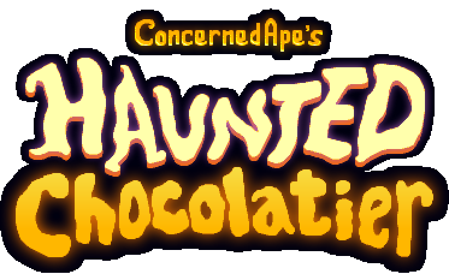

Hello! I like to code and sometime I write stuff too.
Most Recent ExCollege Class Post (11/01)

Haunted Chocolatier
It was only a matter of time before ConcernedApe released a new game, and luckily for us, it looks like that new game might be right around the corner. On October 21st a trailer for ConcernedApe’s new game “Haunted Chocolatier” was released to his official YouTube channel. As a diehard Stardew Valley fan, I couldn’t be more excited. I was hoping that the name “Haunted Chocolatier” was an indication that the game was going to be released on Halloween, but unfortunately, we’re going to have to wait a bit longer for the game to playable.
Haunted Chocolatier is within the same universe as Stardew Valley but is otherwise completely separate. You’re in a new town and you’re no longer a farmer. You are a chocolatier working in a haunted castle and your duties include foraging resources, making chocolate, running your store, battling mystical beings, and many more things. Although the game looks like it might be close to done, it is still in early development. ConcernedApe said in a post that he tends to develop in a “vertical slice” style, meaning that many of the features of the game are built, but each part of the game needs to be built out. Haunted Chocolatier is heading in a different direction that Stardew Valley, with the game focusing more on the battle mechanics. The combat (along with almost everything else in the game) has been completely recoded and redeveloped. He has implemented a new “shield/stun” component that was not in Stardew. When in combat, players can draw a shield to block their opponent which momentarily stuns them. Along with this new component, while watching the trailer, you might notice the sword swinging animation is different as well. The sword swings back and forth (as opposed to just one direction) and looks like an overall smoother movement.
Another interesting component of the game is the mysticism – although Stardew had some “otherworldly” components including the junimos and the wizard character, it was not a focal point of the game. In Haunted Chocolatier, ConcernedApe aims to make that mysticism much more apparent – it’s even in the title. In a post, ConcernedApe refers to the significance of each of the main components of the game “Chocolate represents that which is delightful. The haunted castle represents the allure of the unknown. The ghosts represent the imprint of the past.” This game fits perfectly with what I’d expect from Eric Barone – it’s a mix between lightheartedness and casual gameplay, but with much more under the hood. With many of his projects, Eric puts thought and care into each aspect and Haunted Chocolatier is no different. He is aiming to make the game, most importantly, fun, but he also intends it to be uplifting and “life-affirming.” Eric made an analogy to explain the difference and similarities between Stardew and HC “However, if Stardew Valley mostly channeled the energy of the sun, Haunted Chocolatier channels the energy of the moon. Both are vital.”
At this stage in development, it’s impossible to pin down exactly what Haunted Chocolatier will turn out as, but we know a few things for sure: the art style looks like a refined version of Stardew, the combat is buffed and more complex, the soundtrack is great (based off the song released by ConcernedApe’s YouTube channel), the game walks the line between reality and mysticism, and overall the game is aimed to be lighthearted and fun for players. I can’t hide my excitement for this game, and I hope to see some big updates coming our way soon. If you’re interest at all check out these links:
Trailer Eric’s Blog